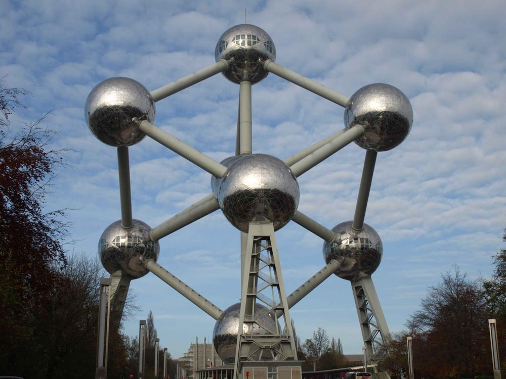

Het gebouw werd ontworpen door ingenieur André Waterkeyn en is sinds de restauratie bekleed met roestvast staal. Vijf van de negen bollen zijn toegankelijk voor het publiek.
Het Atomium is gebouwd in het kader van de Brusselse Wereldtentoonstelling in 1958, de zogenaamde Expo 58. Het stelt één elementaire cel zuiver ijzer voor dat sterk in ontwikkeling was en een belangrijke rol speelde in de optimistische kijk op ontwikkeling in de jaren vijftig. Het heeft de kubisch ruimtelijk gecentreerde structuur, zoals zuiver ijzer bij kamertemperatuur en onder atmosferische druk. Vreemd genoeg werd bij de bouw besloten dat de bollen niet van staal, maar van aluminium moesten worden gemaakt. Dit materiaal was in die tijd een materiaal in opkomst. Het is niet precies bekend waarom dit besluit werd genomen, maar waarschijnlijk was de reden dat aluminium op dat ogenblik aanmerkelijk beter bestand was tegen corrosie dan staal. Het gebouw zou volgens het oorspronkelijke plan niet langer dan zes maanden blijven staan. Aan het eind van de wereldtentoonstelling werd echter besloten om het gebouw, dat inmiddels erg populair en bekend was geworden, toch maar te laten staan.
Van 2004
tot 2006 onderging het monument een twee jaar durende opknapbeurt. Het
Atomium was gedurende die tijd gesloten voor het publiek. Er werd onder
meer aluminium bekleding vervangen door een speciaal type roestvast
staal. De renovatie kostte 26 miljoen euro. Brussel en de vzw Atomium
betaalden een derde van de kosten, de Belgische overheid financierde
twee derde. Op 21 december 2005 werd de nieuwe buitenverlichting van het
Atomium getest.
Oorspronkelijk was het Atomium ook al
verlicht, maar de lampen waren al snel kapot. De meridianen van elke bol
zijn afgedekt met rechthoekige staalplaten, waarin ledverlichting is
geïntegreerd. De ledtoepassing verlicht de bollen, kan de lichten ook
laten knipperen en kan de lichten op een meridiaan na elkaar laten
knipperen, waardoor het traject van een elektron rond zijn kern wordt
gesymboliseerd.
Op dinsdag 14 februari 2006 werd het Atomium officieel heropend door Prins Filip en op zaterdag 18 februari 2006 ging het opnieuw open voor het publiek. Ter gelegenheid van de heropening is een munt van 2 euro met het jaartal 2006 uitgegeven.
Omdat het in 2008 vijftig jaar geleden is dat Expo 58 werd geopend, plaatste men op 11 april 2008 met behulp van een helikopter en paracommando's een Belgische driekleur van 15 vierkante meter op de bovenste bol, net zoals in 1958.
Aan het Louis Steens Plein, 150 meter
ten zuidoosten van het Atomium, werd op 17 april 2008 het Paviljoen van
het tijdelijke Geluk geopend. Het bouwwerk moest een hedendaagse repliek
geven op het Atomium en was – evenals zijn voorganger – bedoeld om maar
een half jaar te blijven staan. Naar de eisen van de tijd werd het
daarom geheel uit herbruikbare materialen opgetrokken: het gebouw dat,
evenals destijds het Atomium het hoofdpaviljoen was, bestond uit 33 000
oranjegele bierbakken. Er waren films en tentoonstellingen te zien over
de Wereldtentoonstellingen, in het bijzonder de Expo 58. Het werd tot 19
oktober gebruikt en werd daarna gesloopt. De data van opening en
sluiting waren exact die van vijftig jaar tevoren.
Het bouwwerk had inclusief binnenterras een grondoppervlak van 2×312 m².
De 33 000 bierbakken van een oud Jupiler-type fungeerden als
prefab-elementen en kregen daarvoor uitstel van recycling. De bakken
werden verbonden met 70 000 tiewraps. Van buiten oogde het bouwwerk min
of meer rechthoekig, maar het hoog opgetrokken dak met kruisribgewelf,
gesteund door pilaren en kapitelen van kratten, gaf binnenin de
ruimtewerking van een gotische kerk.
Het monument is 102 meter en 70,5
centimeter hoog (de diagonaal van de kubus). Het grondvlak is een
zeshoek met een diagonaal van 94 meter. De negen bollen, die een
diameter van 18 meter hebben, bestaan elk uit 48 driehoekige platen van
1 mm dik. Voor de restauratie waren er 720 platen per bol.
Elke bol, die een "sphere" wordt genoemd, heeft een buitenoppervlak van
1082 m² en elk niveau heeft een vloeroppervlak van 240 m²
(er zijn steeds twee niveaus per sphere). De bovenste bol heeft drie
niveaus. Het is mogelijk om met de lift naar de bovenste bol te gaan,
waar een restaurant is gevestigd en men uitzicht heeft over de stad. Met
de roltrappen en gewone trappen bereikt men:
De bollen zijn met elkaar verbonden
door middel van roltrappen en gewone trappen. De drie buitenste hoge
bollen hebben geen verticale dragers en zijn om veiligheidsredenen
gesloten voor het publiek.
Enkele bollen kregen een naam. Zo werd de centrale bol naar André
Waterkeyn genoemd. Een zijdelingse en de onderste bol werden
respectievelijk naar de Nobelprijswinnaars Ilya Prigogine en François
Englert genoemd. Een andere zijdelingse bol is de Kinderbol.[2][3][4]
In januari 2013 werd het door CNN uitgeroepen als bizarste gebouw van
Europa.